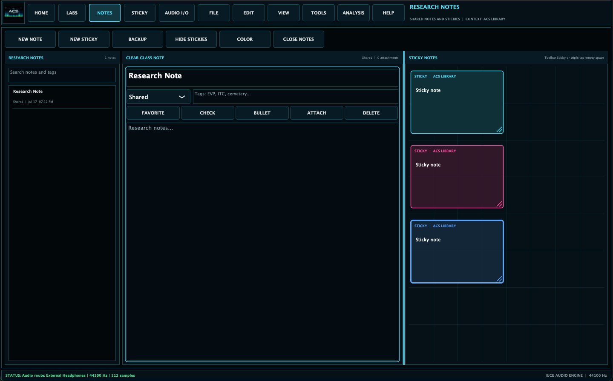

Observation Before Interpretation
A responsible report begins with what was observed: a voice-like sound at 02:14, a light shift in frame 318, a knock during a quiet period, or a pattern in water reflection. Interpretation comes after context.
EVP / ITC Experimentation · 06
How to describe possible, plausible, unresolved, contaminated, explainable, and inconclusive findings without overstating claims.

A responsible report begins with what was observed: a voice-like sound at 02:14, a light shift in frame 318, a knock during a quiet period, or a pattern in water reflection. Interpretation comes after context.
Use categories such as explainable, likely explainable, contaminated, unresolved, possible candidate, review needed, and inconclusive. Reserve stronger language for cases with stronger controls and independent review.
The best EVP/ITC language is careful without being dismissive. It allows mystery to remain while protecting credibility: this candidate remains unexplained after the current review, but ordinary causes cannot be fully excluded.